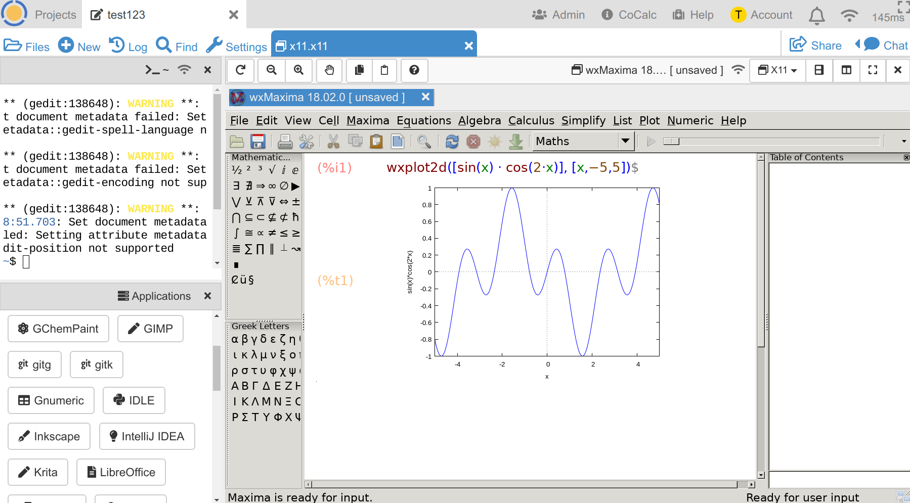

Graphical Applications¶
CoCalc is a modern web-application, but there are many already existing desktop applications. This aspect of CoCalc brings such applications to the web, by running them inside a minimal graphical environment and presenting them to you via the browser. It is even possible to collaboratively work on the same application – although be warned that this is quite confusing!
See this blog post for more screenshot and further explanations.
Getting started¶
In your project, create an X11 Desktop-file (which has the ending *.x11),
or use the corresponding button when creating a new file.
You should see a split frame editor with
- on one left side:
- a Linux Terminal and
- launcher buttons for starting applications
- On the right hand side, there is the view area for X11 windows
Initially, that X11 area is empty and you have to start an application. To get started, we suggest to launch a simple text editor like Gedit or LibreOffice Writer.
Note
You need to click once on the X11 window in order to focus it. This tells it to process any input (mouse clicks, keyboard characters, …)
In the screenshot below, you can see that gedit was typed into the Linux Terminal.
After hitting the return key, the application was launched and the window is shown.
The characters “asdf” were typed in and then the “Save”-Button at the top right inside the Gedit windows was pressed.
This opened up an overlay dialog window.
There, type in the filename and click “Save” at the bottom again.

Afterwards, this did create a file named file1.txt in the current directory.
Go ahead and open it up inside of CoCalc!
Overlay Dialogs¶
Modal dialogs open up as almost-maximized windows on top of the current window of the application.
Note
An overlay dialog window without a Close, Ok, or Cancel button can be closed
by clicking on the application visible in the background; i.e. the surrounding area of the dialog.

Window Tabs¶
When you open up multiple applications (or a single application opens multiple windows), they appear as tabs at the top of the X11 view area. In the screenshot below, you can see that the text file was also opened up in LibreOffice Writer:

Note
Sometimes, applications open up additional dialog windows, which show up as tabs at the top. In order to respond to the application’s dialog window, you have to click on the appropriate tab to open it up and take appropriate actions. (e.g. confirming a certain operation, etc.)
Keyboard Layout¶
CoCalc will try (badly) to guess your keyboard layout based on your browser’s default language settings. This does NOT work well. Instead, you should explicitly select your keyboard layout in Account preferences:
- Open up your Account Settings
- In the tab “Preferences”, look for the panel “Editor settings”
- Inside “Editor Settings”, look for Keyboard layout (for X11 Desktop)
Note
Many languages like “German” will only work well with the variant “no dead keys”.
Zoom¶
CoCalc tries to match its virtual desktop size to the size of the frame inside your browser window. It will also calculate an appropriate zoom level based on the resolution of your screen. However, this might not always work.
At the top of the X11 area are zoom controls, which allow you to change the resolution. Sometimes, it might also be necessary to change some settings within the application itself (some zoom related ones in its preferences), or to change the size of the panel or browser window itself. CoCalc dynamically resizes the desktop and the application will redraw accordingly.
Terminal¶
Inside the small Linux Terminal on the side, you can run programs or your own scripts. For example, this could be a Python script, or even a full application: try this matplotlib: Embedding In Wx5 example.
Behind the scenes, after the X11 environment starts up,
the $DISPLAY variable is set to tell the application where to show the graphical window.
Please wait until it is initialized,
which you can see after the connection indicator at the top right next to “X11” vanishes.
Otherwise, you’ll get this error message
Unable to access the X Display, is $DISPLAY set properly?.
Example script (you can also run it interactively in an ipython3 shell):
import matplotlib
matplotlib.use('wxAgg')
import numpy as np
import matplotlib.pyplot as plt
plt.plot(np.random.randn(1000).cumsum())
plt.show()
Technical Status¶
- Desktop (works well):
- Chrome version 66+ is fully supported
- Copy does not work on Firefox or Safari
- Mobile (does NOT work):
- Viewing the desktop should mostly work
- Touch events barely work at all.
- Even an external keyboard will NOT work on an iPad (keys will be stuck, etc.).
Installed Applications¶
Note
Unless otherwise noted, the application’s name is also the command to start the executable. For most applications you can find a launcher button:

| Name | Description | Category | Status |
|---|---|---|---|
auctex |
latex | ? | |
| avogadro | Advanced molecule editor and visualizer | chem | OK |
| blender | 3D graphics (to visualize wireframes) | graphics | OK |
| cadabra2-gtk | A field-theory motivated approach to computer algebra | physics | OK |
| code | Visual Studio code | code | OK |
| darktable | photography workflow application and raw developer | paint | OK |
google-chrome |
Chrome Web-browser | web | Randomly crashes due to Docker security requirements |
dia |
Drawing graphics | graphics | Mostly OK |
emacs |
Powerful text editor, code, and everything else | code, text | OK |
firefox |
Web-browser | web | Crashes |
| gchempaint | Draw chemical formulas (no single-window mode, though) | chem | ? |
| gedit | text | OK | |
gitk |
Explore a Git repository (in current directory) | git | OK |
gitg |
Simplified interface for working with Git | git | OK |
| gimp | Draw and edit images. (make sure to switch to “single window mode” in the “Window” menu) | paint | OK |
gnome-calculator |
Classical calculator | math | OK |
| gnumeric | Spreadsheet calculations and statistics | stats | OK |
gschem |
schematic capture program/tool part of gEDA | physics | OK |
| gvim | Graphical version of the famous VIM editor | text | OK |
| idle | Minimalistic Python IDE | code | OK |
| inkscape | Professional vector graphics editor | graphics | OK |
| jedit | Java-based text editor | text | ? |
| kbibtex | Reference management software primarily for BibTeX | latex | OK |
| kexi-3.1 | Microsoft Access for Linux | db | OK |
| kile | LaTeX editor, but probably use texmaker instead … |
latex | OK |
| krita | Painting tool designed for concept artists | paint | OK |
| latexdraw | Draw PSTricks, etc. | latex, graphics | flickers :-( |
| libreoffice | Office suite consisting of: localc, lowriter, loimpress, lobase, … |
office | OK |
| lyx | LyX combines the power and flexibility of TeX/LaTeX with the ease of use of a graphical interface. | latex | OK |
| meld | a visual diff and merge tool targeted at developers | code | OK |
| nteract | Jupyter Notebook compatible UI | calc | OK |
| octave | Octave | calc | OK |
| okular | PDF reader and annotator (Tools → Review) | OK | |
| OpenModelica | Modeling and simulation environment. Command: OMEdit & co. |
physics | OK |
| pcb-gtk | printed circuit board editor | physics | OK |
| pinta | simple paint app for images | paint | OK |
psppire |
PSPP is an open-source version of SPSS | stats | OK |
| RCommander | graphical UI for R: start by require(Rcmdr) |
stats | OK |
| rstudio | Open source R IDE. On high resolution displays set Tools → Global Options → Appearance → Zoom → 200% | stats | OK |
| scribus | a page layout program | office | OK |
| SnapPy in Sage | Run via sage -python -m snappy.app |
math | Arrow keys |
| spyder3 | a powerful scientific environment for Python | math | OK |
| texmacs | LaTeX editor | latex | OK |
| texmaker | Powerful, easy to use and elegant LaTeX editor | latex | OK |
| texstudio | Make writing LaTeX as easy and comfortable as possible | latex | OK |
| thunderbird | Email client | office | OK |
| tikzit | A super simple GUI editor for graphs and string diagrams | latex, graphics | ? |
| tuxpaint | Children’s paint program | paint | OK |
| wxmaxima | Computer algebra system Maxima | math | OK |
| xedit | Old graphical text editor in X | edit | OK |
| xournal | Draw notes or annotate a PDF | OK | |
| xpaint | Old paint program | paint | OK |
| Category | Description |
|---|---|
| math | mathematics |
| chem | chemistry applications |
| stats | statistics, data analysis, … |
| physics | tools for physics, engineering, modeling, etc. |
| office | productivity apps for authoring text, presentations, spreadsheets, etc. (doc, docx, odt, ppt, xml, xmlx, ods, … |
| latex | editor for working with LaTeX documents |
| text | general purpose text editors |
| code | tools for software development (IDE, etc.) |
| git | working with Git |
| db | graphical database interfaces |
| paint | raster graphics editor |
| graphics | vector graphics editor |
| for reading, editing, annotating PDFs |
Tips & Tricks¶
RStudio with CoCalc¶
You can use RStudio in CoCalc by doing +New -> X11 Desktop, then clicking the “RStudio” button at the bottom left and waiting 20 seconds. If you need faster response time for R calculations, you might consider the following alternatives to RStudio:
You can also use R in CoCalc via:
- Jupyter notebooks with the R kernel. See Jupyter Kernels.
- Creating a file ending in .r and running it. You can keep your source file in one pane with a Linux terminal beside it to run the program. See Terminal Environment in Split Frame with File Editor.
- R Markdown (Rmd file).
- Knitr (rnw or Rtex file).
- Sage worksheet with R (sagews file and “%r” mode). See Custom “Mode Commands” in Sage Worksheets under Sage Worksheets.
High-resolution HDPI displays¶
If the visible buttons/controls are small, especially if you have a high-res display, and zooming alone doesn’t really help much, enable HDPI rendering. That’s available for some of the applications in their respective configuration dialogs.
Spyder: The “auto high DPI scaling” setting is in Preferences, accessible via the Tools menu or the wrench-icon. See screenshot below:

RStudio: On high resolution displays set Tools → Global Options → Appearance → Zoom → 200%.
Is Scilab broken?¶
In theory, Scilab should work in this Graphical Applications editor, but there is a long standing issue in Ubuntu Linux about this.
As of May 2019, it works, but maybe it’s broken again ¯\_(ツ)_/¯ ?


{kind=link}